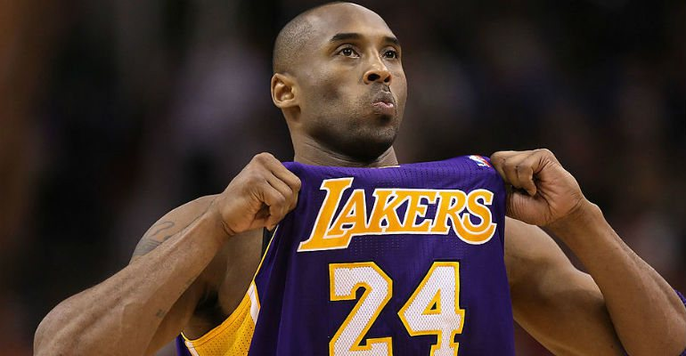

Kobe Bryant

Kobe Bean Bryant (Filadélfia, 23 de agosto de 1978 — Calabasas, 26 de janeiro de 2020)[1] foi um jogador profissional de basquetebol estadunidense. Jogou toda sua carreira como ala-armador no Los Angeles Lakers da National Basketball Association (NBA). Filho de Joe Bryant, ex-jogador do Philadelphia 76ers e antigo técnico do time Los Angeles Sparks da WNBA, é considerado um dos maiores jogadores de todos os tempos.[2][3][4][5] Por outro lado, críticos alegam suas baixas porcentagens de arremessos de campo, de dois e três pontos (ao longo de sua carreira, teve média de 44% em arremessos de dois e 32% em triplos, que até caem nos playoffs), que fazem dele o jogador com mais arremessos perdidos na história da NBA: 14 481 arremessos de campo perdidos na temporada regular (marcou 11 719 de um total de 26 200 arremessos) e 2 485 (marcou 2 014 dum total de 4 499 arremessos nos playoffs), totalizando 16 966 arremessos perdidos.[6]